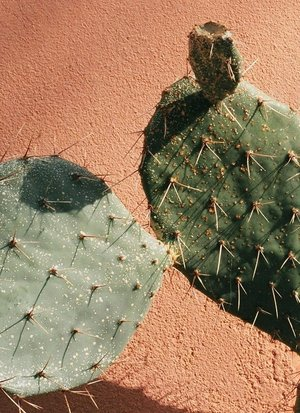
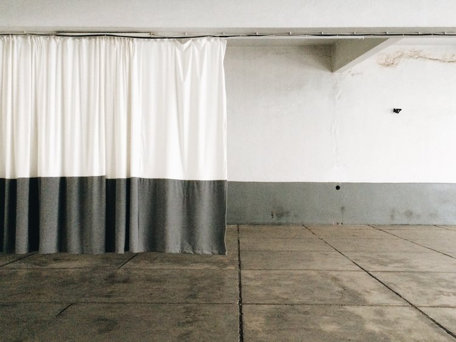

Artist Lynda Laird on using water, infrared film and a WW2 diary in her work...
It’s been a while since we caught up and it seems you’ve been very busy, can you tell me a bit about your recent projects?
So since I finished my Master’s [in Documentary Photography and Photojournalism at London College of Communication] I was selected for a graduate residency in Deauville in France which then led to another one in the same town the following year. I was commissioned to make a body of work that was connected to the town. The first project I made was called L'amour lui-même doit s'endormir (Love itself shall slumber on) where I focused on a disused building which was once an orphanage built specifically to house the children who had lost their fathers to the sea, (a fisherman's orphanage). I photographed all the remaining bedrooms in the building; each one was exactly the same in dimensions, each with a sink and a window but the wall coverings and curtains were different – I found these rooms particularly poignant.
I then created an image from the sea for each bedroom, by placing a piece of photographic paper under the water, exposing it in the dark with a flash gun and developing them in my little beach hut darkroom. The idea was that this image represented the lost sailor, with a trace of the sailor being absorbed into the paper – this is something I have worked with before, the idea of the memory of water.
I then collected testimony and memories from people that had a connection with the building, whether they had worked there or had a relative who had spent time in the orphanage or they themselves maybe had a specific experience of the place.
Finally I made sound recordings of the space; I was particularly struck by the sound of the seagulls that sat on the roof of the building, there were lots of shells dropped in to the courtyard of the building by them. In folklore seagulls take on the souls of lost sailors and I thought this was quite a poetic idea that these birds were the souls of the children's father watching over them. The work was shown as an installation as part of the photography festival in the town.

And for your second residency in Deauville?
The second project I made was called Dans le Noir (In the dark) and I focused on a diary of a woman called Odette Brefort who lived under German occupation in Deauville during WW2. Odette was a young woman who had become a member of the French resistance. I chose to use just one day of her diary, the day of the D-Day landings, 6th June 1944. I used her diary entry being read as a sound piece and then I photographed the German surveillance bunkers along the Normandy coast.
I chose to photograph them in Infrared film which was a technology created by the military in WW2 to detect camouflage, so it picks up a visual spectrum invisible to the naked eye showing up anything that's dead as black and anything alive as pinks and reds. Something the German soldiers did was paint trees onto the buildings and bunkers they occupied along the coast to disguise them but this film exposes it.
I then shot underwater video at each of the landing beaches between 5.30 and 7.30am, the time of the attacks, and again created an installation from all the elements. I chose to print the infrared images on to silk and stitched them around the edges, a reference to another technology that was first employed in WW2 where silk escape maps were stitched inside the paratroopers uniforms. I also found some drawings that Odette had made – they were maps informing on the Germans’ positioning throughout Deauville and the neighbouring town Trouville that she sent to the Resistance in Paris – these too formed part of the Installation.
Here is an extract from Odette's diary:
Oh, what a night! My little head is all shell-shocked.
Since midnight it’s been impossible to sleep: the humming from planes, the anti-aircraft bombs, the machine gun noise.
I went downstairs because I couldn’t sleep and after 15 minutes it went quiet. Thinking it would be better, I went back to bed. What a mistake!
All night, the humming from planes, it was non-stop.
What a joy when waking this morning, someone announces there was a landing at Dives.
At 8.20am a bomb falls on the Printemps store, another one on the Normandy.
By rule we don’t have the right to leave Deauville, or to ride our bicycles.
The weather remained foggy until midday, the sun shone from 4pm. It must be the English who brought the clouds! The defence volunteers will be able to move freely tonight.
Around 6pm, what a tremendous bang! it is the Mont Canisy. The English navy must have blown up a large artillery battery that was shooting at them. It had been deafening us since this morning. I think the shot hit the target, as we can’t hear a thing anymore.
What on earth will happen to us when the Navy and Air Force take care of our region?
There is no electricity. Deauville is in the dark.
—Odette Brefort, 6 June 1944
Wow, what a story. I’m always struck by the level of research behind your work, how did you develop this kind of practice and how has it evolved?
My practice really changed during my time studying for my MA at LCC; it was here that reading and research became very important to me and the way I work. My ideas always come from reading; once I have a project idea I will research to find a way of working that is sympathetic to the story/place or time. I try to find techniques and methods that are relevant to what I am working on, so there will be a reason for every choice I make, whether that's a type of film or camera, or the time the image was taken.
I often start now with sound recording and images come a lot later down the track, I don't try to fit an image in to a project, it's the other way around and how they actually look are a lot less important to me than how relevant they are to the project.
Which project are you most proud of?
I am really proud of both the projects I produced in France but I think the project I enjoyed making the most was my MA major project – 08Comdharrah – where I turned the waterways on the island of Lewis into a camera. I loved being in this landscape and the people I met were so generous with their time and in helping me out. I also really enjoyed working with sound as extensively as I did with Annie Needham the sound recordist who I collaborated with – there were so many elements I loved about this project, combining sound, interviews, music, language and poetry with video, stills and archive. I also collected and pressed plants from the moor which I have just been looking at today and they still make me so happy, they are so delicate and colourful and special. I had two months on the island just to focus on this project and now that feels like an absolute luxury.
What are you working on at the moment?
I don't have a new project on the go but I have had quite a lot of interest with the last one I did in France [including an article on the BBC]. I have an exhibition coming up at the Argentea Gallery in Birmingham next month and any spare time I have is used to apply for grants/commissions and promoting this last project. The rest of the time I am trying to make money!
Do you still had a day job or are you managing to live just as an artist?
I have several day jobs! I work a couple of days a week as a picture researcher at the Sunday Times, I teach yoga, do the odd photography job and then make a little bit through my work. I have been paid for the artist residencies I have done but all the money went on producing the work, printing, transport to France etc. My time is split up between my paid work and applying for grants and various opportunities etc. I have sold a few prints but am a very long way off managing to live as an artist, but to be honest I like the variety and If I was trying to make work full time I think I might find it very difficult and isolating.
Interview by Maria Howard. Find out more about Lynda’s work at lyndalaird.com
Yiğithan Özden on photography, instagram and his day job
 In the first of a new series of interviews, we spoke to #telegramtakeover veteran Yiğithan Özden about his love for photography and how instagram has helped him share his work.
You first collaborated with us back in 2015 I believe, do you remember how you first came across Telegram Gallery and the #telegramtakeover series?
I think it was at the beginning of 2015 that I had seen some of the people I followed post for #telegramtakeover and I decided to give it a go and get in touch with you. When I received an affirmative response I was pretty psyched because I had just recently begun taking random photos and it would be my first takeover. To be quite frank I was receiving mixed signals from my immediate surroundings about posting content on social media. Starting off anything new seems to always be a struggle and I think Telegram Gallery has helped me get the ball rolling insofar as establishing some credibility into my photographic aspirations.
Ever since my initial takeover we've had quite a nice relationship which includes more takeovers and especially taking part in a group exhibition. Being able to say I've been able to send photos to an exhibition in London further motivates me to stick to this means of expression. Of course I also participated in the first #telegramtakeover zine which was a new experience and being on the cover made it ever more joyous. I hope that our relationship can deepen in the future and we contribute to each other's prosperity whatever it may be.
Likewise! What do you like most about sharing your work on this particular platform?
Honestly when people ask me what these images are I just simply tell them they're random photos. I still consider myself new in the field and lacking in-depth theoretical knowledge about it. I've also taken a long time off to focus on other personal objectives but now I feel like I can work to deepen my understanding and hone my skills by investing more time and effort.
As far as sharing work on digital platforms go, I really enjoy the feedback I get. The internet offers many opportunities and connecting with people worldwide, sharing my experiences grants me some time off from reality.
Indeed – you have quite an unusual day job, can you tell us a bit about it?
I'd like to say I was some sort of James Bond but frankly I'm just a civil servant at the very beginning of my career. My father has also worked in many different parts of the world so my upbringing isn't all that different from the journey ahead. Seemingly the future of global politics is in rapid transition I hope that as a diplomatic witness I'll be able to see and take interesting photos on the side and lead a fulfilling life.
How did you first get into photography?
I met a photographer in London who seemed to be having a blast taking random photos. In fact this was @joeearleyjournal and he had such a good attitude towards the whole process that it made me want to take it up as well, starting up simply with my phone. Then as I began to explore options I transferred towards using film as my medium and am enjoying the ride ever since. Thanks Joe!
To me your work picks up on the quiet details of urban life, moments of stillness caught while everybody else’s back is turned, but how do you see these moments, do you seek them out or are they the product of chance?
Yeah I guess you can say that I try to find interesting frames in ordinary things. My sense of aesthetics always transforms with different environments. Being constantly nomadic makes it difficult for me to focus on any specific subject but hopefully in the future I'll have more meaningful projects to share. My eyes are always sort of scouting for worthwhile frames. While this can get tiring at times it's always good exercise to stay alert and attentive to details that are otherwise missed.
Friends and family aside, who are some of your go to accounts on instagram?
Let me see... Like everyone I enjoy animal videos so @animalsdoingthings is always a laugh. @nusr_et who is arguably the most famous Turk because I respect his work ethic and discipline which he constantly displays through his instagram. @alielmaci is a Turkish artist/painter who I really enjoy the work of. He presents colorfully grim contrasting notions effortlessly. @ishitani_furniture creates amazing furniture. They have a pretty epic youtube account which everyone should check out. Lastly, let me mention @didemkendik an artist based in Istanbul who I believe gracefully brings out the beauty in the people and places she visits through her lens.
Interview by Maria Howard. You can follow the #telegramtakeover on instagram. Contact maria@telegramgallery.com for more information.